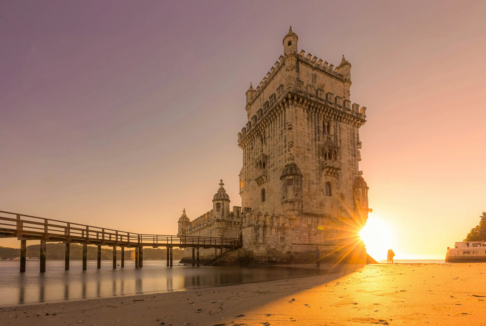

Ao longo da famosa Costa do Estoril, cada paragem revela um Portugal diferente. O glamour atemporal do Casino do Estoril contrasta com a autenticidade de Cascais — uma antiga aldeia de pescadores transformada num dos destinos mais refinados do país. No caminho, a Boca do Inferno impressiona com a força crua do Atlântico, e as praias douradas convidam a parar e simplesmente contemplar.
Um tour que combina o melhor do litoral português: mar, história, arquitectura e a alma autêntica de uma vila que soube reinventar-se sem perder o charme. Com transporte em Toyota Corolla Sedan Hybrid para até 4 passageiros e comunicação em português, inglês, russo ou romeno.